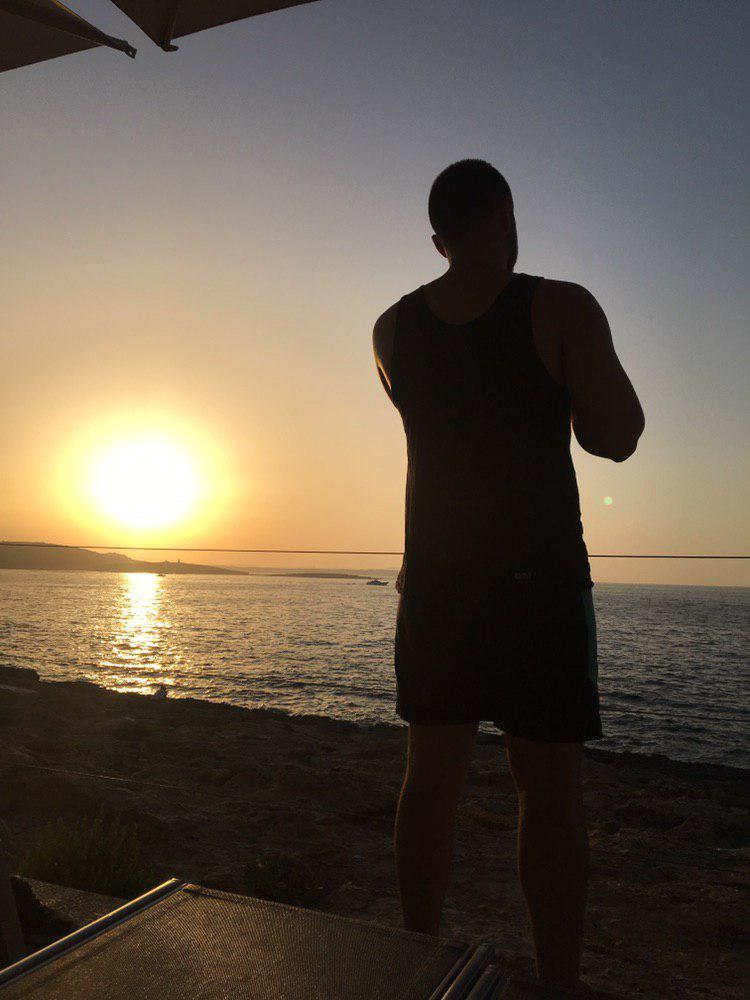

This is Francesco Milano Github site
Born in Milan in 1998 I always been passionate about electronics and computers!
I'm currently a CS student at Università degli Studi di Milano
In this site you can find different projects and exercises that I did for personal use during the past years.
I'm currently studying different programming languages, including Golang, C, Java, PHP, JavaScript, Python and Rust.
Some experience with HTML5, CSS, different Interfaces frameworks like Electron, Tkinter and Swing.
Really passionate about database management through Postgres, fascinated by PLPgSQL.
Created different Telegram Bots to manage BUS schedules, Note reminders, interaction with channels for news (i.e COVID-19 graphs).